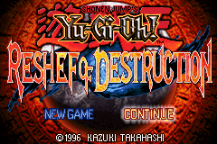
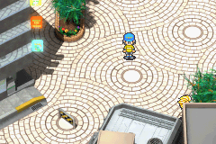
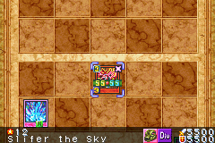
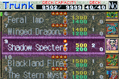
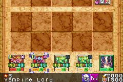
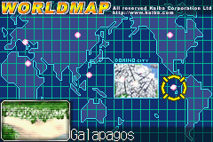
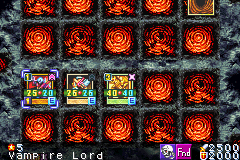

| Home | Blog | Games | Links | Music |

Yu-Gi-Oh : Reshef of Destruction was first released in 2003 in Japan but was later released the next year
for Europe & the US.
Sol Chevalsky wants to unleash Reshef and destroy the entire world ! Ishizu wastes no time and tells you and your friends everything about Reshef and what will happen to the world.
To prevent this from happening, you need to get all the millenium puzzles before Sol Chevalsky’s minions and destroy Reshef.
Meanwhile, the Neo Ghouls and their leader Bandit Keith also want to gather the millenium puzzles at all cost.

You start with what i can describe as the one of the crappiest deck in the Yu-Gi-oh series. Simply put, your no-tribute monsters are too weak and don’t go beyond 800 ATK. Your spells are also crap, most infamously “Sparkles” which only deals 50lp of damage. (Each opponent starts with 8000lp…)

At first, you struggle a bit and it is not too difficult. As soon as you face the first millenium keeper however… the difficulty ramps up considerably. He uses monsters much stronger than you can have or even be able to use !
If you want to get better cards, you will have to either get them by winning dueling (unlikely) or you can buy them at Solumon’s card shop.
HOWEVER… the amount of DP (ingame currency) he asks for one card is insane !
A 1200-ATK beater will cost you 4000 DP, while your friends only give you 80 DP per duel.
This is required because the first millenium keeper has several monsters with 900 ATK or more.

But let’s say that you have the DP required to have it… you can’t even use it ! For some bulls*** reason, you also need to increase your duelist level to use a monster. If it’s not high enough, you can’t put it in your deck.
UGGGHHH
A simple monster with 1200 ATK requires you to increase your level to 140… and that alone can take several days !
That’s just for only one card though, don’t forget that a deck has 40 cards !

Because i don’t want to spend a year just so i can beat that guy, i cheated and gave myself infinite money and maxed out my level.
I could now buy good cards like Vampire Lord, Cocoon, Nuvia, Flash Assailant etc…
With a good deck, the guy was surprisingly easy to beat.
I got my first millennium item, the necklace and it indeed confirmed Ishizu’s worries : The world became engulfed in flames, with Yugi as the only survivor.
Ishizu then tells us that to gather all the other pieces across the world. I’m not going to spoil you everything, other than the game becomes much more difficult after you meet Bandit Keith and going across the world does not sound as exciting as it sounds, sorry guys.

If the game is to be believed : Italians are dirty people living in sewers, canadians are obessed with dinosaurs, the chinese are still making noodles at the great wall of china and some egyptians still believe in the ancient egyptian gods… yeah.
Also, Mai Valentine being constantly harrased by some guy.
The difficulty spikes right when you fight Marik.
Despite the fact that i cheated, i still managed to lose !
That’s because he runs 3 copies of Raigeki, Change of Heart and Pot of Greed, even though you are only allowed 1 copy of each “Limited” cards but the AI is not under such restriction !
You head off to Pegasus’ island and it becomes even more difficult : your opponent starts with 10,000LP. And you have no way to regenerate your LP between duels without going back to your house !
Pegasu’s island is the one of the worst and most difficult marathons i ever played, i don’t think i would have make it without save states…
After some of the most insane duels, you finally face off Sol Chevalsky, which is none other than Pegasus being brainwashed by Reshef with a new haircut.
He starts with 20,000Lp and he uses 3 copies of Restrict, which can steal your monsters. Again, you are limited to 1 limited card but he uses 3 copies of them x_x
But after you beat him, it’s not over yet ! You’re about to face Reshef and he’s brutal…
He starts with 40,000lp, he has all the God cards, he has some of the most powerful cards in the game. Not only that, but he has game-breaking cards like Change of Heart, Dark Hole, Torrential Tribute, Raigeki etc… and the only cards immune to them are god cards !

He’s constanly destroying your monsters, he keeps stealing your monsters, he’s swarming you with lots of monsters and he’s stalling you with Swords of Revealing Light until he summon Ra. If he summons Ra, Game Over because he will use it’s special ability to convert his LP to effect damage, which means your death.
Despite the fact i cheated, i lost countless of times to him. But i eventually managed to win by summoning Ra before him.
Conclusion
The game’s difficulty is brutal but it’s not based on your skills and it is by no means fair. To make up for the game’s limited AI, it gave them enormous Life points and no restrictions on cards.
It also made the cards much more expensive to buy, while giving you very few DP.
As soon as you can get better cards, the game becomes suddenly easier. This is difficulty done wrong.
No sane human being can finish this game without spending a year trying to finish it or without cheats.
This is probably one of the hardest game in the series, if not the hardest.
On the upside, the plot is definitively interesting. It’s an alternative take on the OG series and it’s quite surprising seeing Bandit Keith actually causing trouble.
But it’s not worth the investment required, unless you intend to cheat of course. The game also suffers from annoying issues like the crappy countinous effect detector.
Summon Silfer and the game will remind you that its attack gets increased based on your hand, each fucking time a move is made : It can pop up like 5 times each turn ! Why even bother konami ?
Try it if you have 1 year to waste and want a challenge…
…OR you want to cheat and see the plot by yourself.